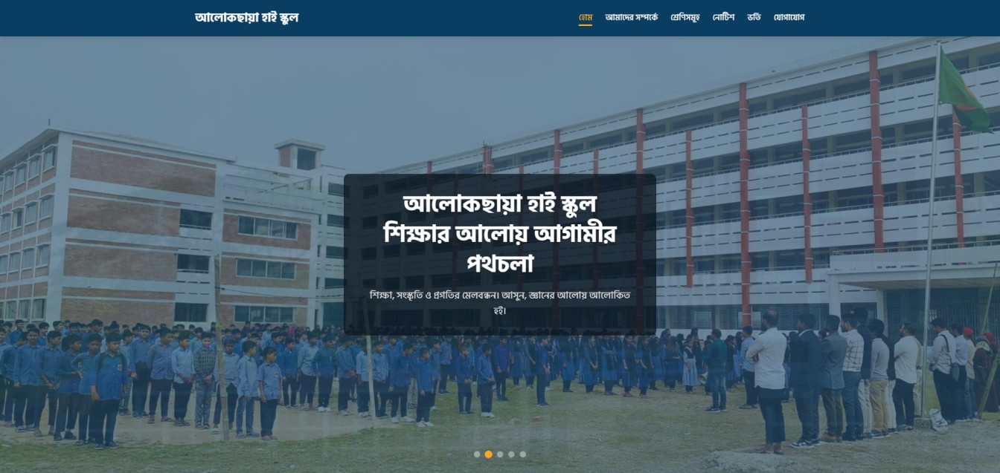

> Hello, I'm Mohiuddin Munna
I'm a _
Crafting digital experiences with a fusion of cutting-edge technology and creative design. I transform complex problems into intuitive and engaging web solutions.
I'm a _
Crafting digital experiences with a fusion of cutting-edge technology and creative design. I transform complex problems into intuitive and engaging web solutions.
____ ____ ___ ____ ____ _ _ _ ____ | _ \ | _ \ / _ \ / ___| / ___| / \ | \ | | / ___| | |_) || |_) || | | || | _ | | _ / _ \ | \| || | | __/ | _ < | |_| || |_| | | |_| |/ ___ \| |\ || |___ |_| |_| \_\ \___/ \____| \____|\_/ \_\| \_| \____|
A glimpse into my recent work and capabilities. Each project is a testament to dedication and skill.

This project involved the design and development of a responsive, multi-section website for "Alokchhaya High School." Created over a span of two days, the website serves as an online information hub for students, parents, and prospective applicants. It aims to showcase the school's mission, facilities, academic programs, and activities in a clean, modern, and user-friendly interface

An interactive dashboard for visualizing complex datasets, featuring real-time updates and customizable widgets. Designed for performance and a sleek, futuristic interface.

A dynamic personal portfolio website (like this one!) showcasing skills and projects with a unique cyberpunk aesthetic and smooth animations.
Initiating connection... My designation: Mohiuddin Munna.
I am a passionate Front-End Web Developer with a knack for crafting immersive and user-centric digital experiences. My journey in the tech-verse is driven by a constant pursuit of innovation and a deep love for clean, efficient code. I thrive on transforming complex ideas into elegant, functional, and visually compelling web solutions.
My core mission is to leverage technology to build bridges between human needs and digital possibilities, creating interfaces that are not just functional but also a joy to interact with.
The primary technologies and methodologies I leverage to build high-performance, engaging web experiences.
Crafting responsive and interactive user interfaces with HTML5, CSS3, JavaScript (ES6+), and modern frameworks like React or Vue.js.
Applying user-centered design thinking to create intuitive, accessible, and aesthetically pleasing digital products that solve real problems.
Ensuring seamless experiences across all devices – desktops, tablets, and mobiles – using flexible grids, media queries, and adaptive layouts.
Connecting web applications with third-party services and backend systems via RESTful APIs or GraphQL for dynamic content and functionality.
Valuable feedback from those I've had the pleasure to collaborate with. Their success stories are my greatest motivators.
"Working with Mohiuddin Munna was an absolute pleasure. His technical expertise, attention to detail, and proactive communication made our project a resounding success. He delivered beyond our expectations!"
"Munna is a highly skilled developer with a fantastic eye for design. He understood our vision perfectly and translated it into a beautiful, functional website. Highly recommended!"
Have a project in mind, a question, or just want to connect? My comms are open. Let's decode the future together and build something truly exceptional.